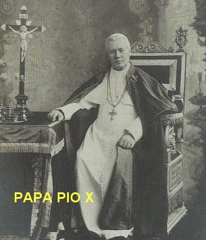
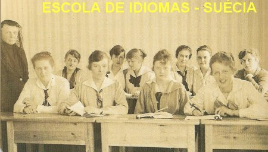
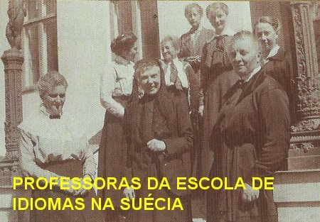
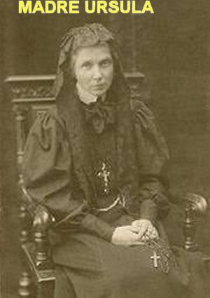
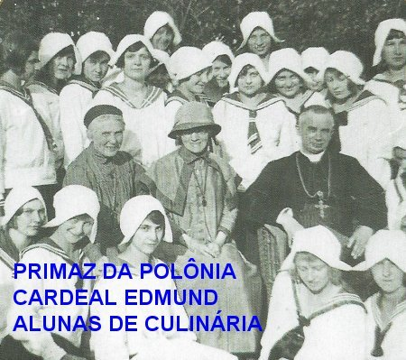
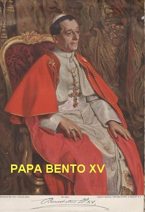

"ILUMINADA PELO ESPÍRITO DIVINO"
PRIMEIRA GRANDE GUERRA MUNDIAL
No dia 1º de Agosto de 1914 a Alemanha
declarou guerra à Rússia. Na Europa os conflitos se intensificaram, dando origem a
Primeira Grande Guerra Mundial. E o fato eclodiu, em face de muitos acontecimentos
em diversas regiões. Havia grande tensão nos Bálcãs, envolvendo diversos pequenos
países: Albânia, Bósnia Herzegovina, Bulgária, Grécia, Montenegro, Servia, România,
parte da Turquia e parte da Croácia. Assim como disputa pelo poderio militar mundial,
principalmente entre a Alemanha e a Rússia, e também, briga por colônias na
África e na Ásia, com intervenções da Espanha e de Portugal; além de um abominável
revanchismo Francês; também os Estados Unidos sentiram-se prejudicados pela desorganização
do comércio internacional, e entrou no conflito. Verdade é que a Primeira Grande
Guerra Mundial deixou um saldo de 10 milhões de mortos até o ano de 1918.

FALECIMENTO DO PAPA PIO X
As noticias se espalharam rapidamente
e o fato causou surpresa, porque aparentemente ele era um homem saudável. Todos ficaram
preocupados, considerando que na realidade, ele além de ser muito estimado por todos,
era um homem organizado e respeitado, e suas decisões ao longo da sua administração,
foram incontestáveis e trouxeram bem estar e alegria ao universo cristão. Mas na
verdade, o Sumo Pontífice já vinha enfrentando problemas de saúde há dois anos.
Então aconteceu sua morte em 20 de Agosto de 1914. E apesar da Guerra, o mundo
cristão tributou-lhe uma fervorosa e carinhosa homenagem. Como normalmente
acontece, em seguida, no Vaticano os Cardeais se reuniram para eleger o
sucessor. Foi eleito o Papa Bento XV – Cardeal Giacomo della Chiesa.
NOMINALMENTE FOI EXPULSA DA RÚSSIA
Em 25 de Agosto, Madre Úrsula, em
face da Guerra entre Alemanha e Rússia, por ser cidadã austríaca recebeu ordem
específica e nominal das autoridades do Czar Soviético, para abandonar a Rússia.
Então, ela escolheu a Suécia para se refugiar e permanecer, pois assim, ainda
estaria mais próxima possível das suas Irmãs, que continuaram trabalhando no
“Convento Ursulino de São Petersburgo”
. E com elas conseguiu manter um contato
constante através de correspondências. Todavia, meses depois, em face da
abominável repressão russa, uma a uma, as Irmãs começaram a deixar a Rússia e
vieram se unir a ela, na Suécia, em virtude da impossibilidade de continuar
trabalhando por causa da guerra e também, de um terrível ambiente revolucionário
local, na Rússia.
REVISTA MENSAL – IDIOMAS - E OS
ÓRFÃOS
Na Suécia, Madre Úrsula em Abril de 1915,
iniciou uma série de 25 Conferências realizadas em várias cidades suecas e na Dinamarca,
em benefício do “Comitê
Geral de Ajuda às
Vitimas de Guerra na Polônia”. Estudou e aprendeu
os idiomas escandinavos para facilitar o entendimento, e tentou manter contato com pessoas
ilustres da Escandinávia.
Em Setembro, ela e as Irmãs abriram uma
“Escola de Idiomas”
em Djursholm, na Suécia, para moças escandinavas. A Casa
das Irmãs tornou-se também um local de encontro para os emigrantes, políticos
poloneses e autoridades de vários credos.
Em 1916 por sua iniciativa, apareceu
a primeira edição da Revista mensal
“Solglimtar” (Raio de Sol), para os
católicos suecos. A seguir, realizou constantes palestras na Dinamarca e na
Noruega, divulgando a Revista. Com esta providência, pela boa qualidade das
entrevistas e reportagens, a Revista conseguiu muitos assinantes.

Em Junho de 1917, em face da pressão soviética,
aconteceu a saída definitiva das últimas Irmãs Ursulinas que estavam em São Petersburgo,
as quais também seguiram para a Suécia.
Ainda em 1917, Madre Úrsula mudou-se com
toda a Comunidade Religiosa da Suécia, para Alborg na Dinamarca, considerando que algumas
autoridades suecas não eram muito favoráveis a expansão das atividades religiosas no país.
Na Dinamarca instalou uma Casa para
“Meninos Órfãos”dos imigrantes poloneses.
Em Novembro, realizou um ciclo de palestras
na Suécia e na Dinamarca, em benefício do “Orfanato em Alborg”. E também, no mês de Dezembro,
transferiu a “Escola de Idiomas”
da Suécia para Alborg, na Dinamarca.
Durante o tempo em que permaneceu na Escandinávia,
além do seu apostolado educativo, trabalhou intensamente na promoção ecumênica, mostrando
disposição e dialogo com outras confissões religiosas. Ela sempre acreditou na
“bondade infinita e misericordiosa de DEUS"
em acolher todos os Credos, desde que reconhecessem o Amor Infinito
do PAI ETERNO e a Admirável, Corajosa e Sofrida Obra Redentora de JESUS. DEUS é AMOR.
UNIÃO DAS CONGREGAÇÕES URSULINAS
Em Janeiro de 1920, existiam diversas
Organizações religiosas com o nome de Santa Úrsula. Assim, as Congregações Ursulinas
na Polônia, se juntaram e formaram uma única União das Congregações Ursulinas Polonesas.
Todavia, Madre Úrsula não conseguiu colocar a sua Ordem Religiosa, que também era
Ursulina, dentro daquela união das Ursulinas Polonesas. E a sua Comunidade Religiosa,
sempre foi dedicada a Santa Úrsula. Então se decidiu comprar uma
propriedade em Pniewy, perto de
Poznan também na Polônia, a fim de ali colocar as Irmãs da sua Comunidade, e montar as
suas instalações administrativas.
CONGREGAÇÃO DAS IRMÃS URSULINAS DO
CORAÇÃO DE JESUS AGONIZANTE
No mês de Abril viajou a Roma a fim de
regularizar questões da sua Congregação. No mês de Maio teve audiência com o Papa Bento XV.
Em Junho conseguiu a licença da Santa Sé para transferir a ereção canônica da Casa de São
Petersburgo na Rússia (que ela tinha o Alvará) para a Casa de Pniewy, na Polônia, transformando
a sua Comunidade numa Congregação de caráter Apostólico (Congregação das Irmãs Ursulinas do Coração de JESUS Agonizante). E evidentemente, sempre vivendo a espiritualidade ursulina, como
também dando continuidade à tradição do trabalho educativo e pedagógico, buscando ao mesmo
tempo, novas formas de evangelização que correspondessem à necessidade atual, especialmente
dedicada aos mais pobres. As pessoas perguntavam a Madre: “Qual era a sua orientação política?” Ela sem vacilar respondia:
“Minha política é o Amor”. A espiritualidade da
Congregação se centrava na contemplação do amor salvífico de CRISTO e na participação da
SUA Missão Divina, por meio de um trabalho educativo e pelo serviço dedicado ao próximo,
especialmente aos que sofrem e aqueles que vivem na solidão, inclusive os marginalizados
e aos que buscam o sentido da sua própria vida.
PRIMEIRA MISSA NA CASA MÃE POLONESA
 Depois de muito esforço e intenso trabalho,
conseguiu aprontar a Casa Mãe. Logo no mês de Agosto, chegou com o primeiro grupo de Irmãs
e crianças a Pniewy. Nasceu a primeira Casa das Ursulinas na Polônia, chamada de
“Casa Mãe”.
No dia 15 de Agosto, a senhora Ludmila ofereceu um Altar e uma linda imagem do SAGRADO CORAÇÃO
DE JESUS para a Capelinha da Casa em Pniewy, acontecimento que trouxe grande alegria e muita
felicidade a Madre Úrsula e a todas as Irmãs. Padre Tuszowski aceitou o convite para rezar
com as Irmãs a Primeira Santa Missa na Capela da Nova Casa. Foi uma Santa Missa linda
e bem participada, em que as palavras do Sacerdote Celebrante emolduradas pelo Amor
Divino, tornou a cerimônia maravilhosa. Depois da Missa elas se manifestavam assim:
“Oh, quanta felicidade sentimos
no momento em que JESUS SE fez presente no Altar da Celebração, porque desde então, ELE
permanecerá conosco para sempre. A vida se torna diferente, quando o SENHOR está presente
em nossa casa. E assim também, sob a proteção de MARIA, estaremos sempre seguras”.
Depois de muito esforço e intenso trabalho,
conseguiu aprontar a Casa Mãe. Logo no mês de Agosto, chegou com o primeiro grupo de Irmãs
e crianças a Pniewy. Nasceu a primeira Casa das Ursulinas na Polônia, chamada de
“Casa Mãe”.
No dia 15 de Agosto, a senhora Ludmila ofereceu um Altar e uma linda imagem do SAGRADO CORAÇÃO
DE JESUS para a Capelinha da Casa em Pniewy, acontecimento que trouxe grande alegria e muita
felicidade a Madre Úrsula e a todas as Irmãs. Padre Tuszowski aceitou o convite para rezar
com as Irmãs a Primeira Santa Missa na Capela da Nova Casa. Foi uma Santa Missa linda
e bem participada, em que as palavras do Sacerdote Celebrante emolduradas pelo Amor
Divino, tornou a cerimônia maravilhosa. Depois da Missa elas se manifestavam assim:
“Oh, quanta felicidade sentimos
no momento em que JESUS SE fez presente no Altar da Celebração, porque desde então, ELE
permanecerá conosco para sempre. A vida se torna diferente, quando o SENHOR está presente
em nossa casa. E assim também, sob a proteção de MARIA, estaremos sempre seguras”.
NOVAS CASAS NA POLÔNIA E NO EXTERIOR

O período de 1921 a 1939 foi fértil e de
imenso trabalho. A Congregação sob a direção da fundadora desenvolveu-se rapidamente.
Foram criadas diversas “Casas”
e realizadas muitas obras na Polônia: em
Wielkpolska, Sieradz, Diocese de Lódz, Varsóvia, Wilenszczyzna, Wolyn e Polesie.
E logo em seguida abriram Casas no exterior: Casas na Itália e na França.
Em Março de 1921, em virtude de seu
intenso trabalho, Madre Úrsula ficou doente do coração. E apenas como medida de
precaução escreveu o seu Testamento, que na realidade, só ficou concluído no dia
28 de Outubro de 1924. Mas as Irmãs só o receberam depois da sua morte, ocorrida
no ano 1939, o qual se tornou a síntese e o fundamento da espiritualidade da
Congregação.
REDAÇÃO DAS CONSTITUIÇÕES
No mês de Abril cuidou da Redação
das Constituições da Congregação. E também, a convite de fazendeiras, dirigiu-se
a Sieradz, e na sala do teatro fez uma palestra sobre o trabalho da Nova Congregação.
Tomou também a decisão de assumir e reconstruir o ex-Convento Dominicano de Sieradz,
que depois de reformado colocou o nome de “Convento da Rainha Edviges”. E porque
também sempre admirou e alcançou a boa intercessão dela junto a DEUS, colaborou
efetivamente para a Canonização da Rainha Edviges.
Em Junho de 1923 a Santa Sé aprovou
as “Constituições da Congregação
das Irmãs Ursulinas do Coração de JESUS Agonizante”,
por um período de experiência durante 7 anos.
TRABALHO CATEQUÉTICO
No mês de Julho, o Bispo Dom Vicenty
Tymieniecki convidou as Irmãs para o trabalho de catequese em Lódz, também na Polônia.
Foi tudo combinado e definido, pois na realidade, as Irmãs já haviam realizado trabalhos
semelhantes na Suécia, com pleno êxito. A Catequese começou em Março de 1922.
FALECIMENTO DO PAPA BENTO XV
Em Janeiro de 1922 faleceu o Papa Bento XV,
em face de problemas no coração. Os Cardiais foram convidados a comparecer, e no dia 6 de
Fevereiro no Vaticano, foi eleito o Novo Papa, o sucessor do Papa Bento XV, tendo sido
escolhido o Cardeal Achilles Ratti, que recebeu o nome de Papa Pio XI.
JUNHO E JULHO DE 1922
No dia 23 de Junho, chegou à Polônia o
último grupo de Irmãs e das crianças, que ainda estavam na Dinamarca.
No dia 6 de Julho morreu a irmã mais velha
de Madre Úrsula, Madre Maria Teresa Ledóchowska, que foi a fundadora da Congregação das
Missionárias de São Pedro Claver. Madre Maria Teresa realizou um trabalho sério e admirável,
que trouxe muitos benefícios à sua Congregação. Por milagre ocorrido por sua intercessão
junto a DEUS, ela foi Beatificada em 1975, no Vaticano, pelo Papa Paulo VI.

 PRÓXIMA PÁGINA
PRÓXIMA PÁGINA
PÁGINA ANTERIOR
RETORNA AO ÍNDICE